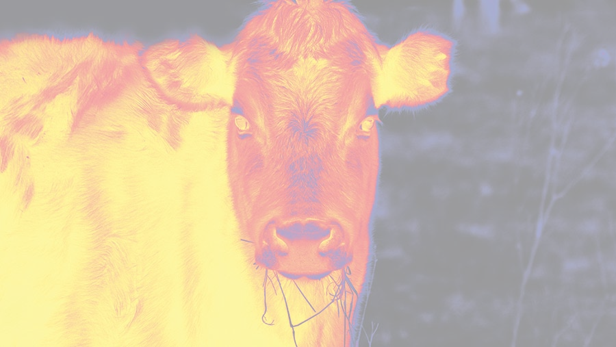

Effectieve Rattenbestrijding in Groningen
Wij lossen uw rattenoverlast gericht, discreet en 100% gifvrij op. Specialist in thermische detectie en ecologische beheersing.
Vraag nu een inspectie aanOnze Specialismen
Agrarische Sector
Bescherming van vee en voeropslag in stallen en boerderijen. 100% gifvrij en veilig.
Lees meer →Bedrijven & HACCP
Discrete bestrijding voor industrie en horeca, volledig conform GMP en HACCP normen.
Lees meer →Particulieren
Snel en veilig van ratten in uw tuin of bij uw kippenhok af, zonder risico voor huisdieren.
Lees meer →Voor (agrarische) bedrijven en particulieren
Of u nu een boerenbedrijf runt, een industrieel pand beheert of overlast ervaart in uw eigen tuin: wij staan voor u klaar. Wij zijn volledig bekend met en werken volgens de GMP en HACCP voorschriften.
Thermische Detectie
Dankzij geavanceerde thermische scopes en infrarood wildcamera's lokaliseren we ratten in totale duisternis zonder ze te storen.
Discreet & Professioneel
Onze inzet van fluisterstille PCP luchtbuksen zorgt voor een directe eliminatie zonder onrust of geluidsoverlast voor de omgeving.
Duurzame Bestrijding
100% gifvrij. Veilig voor uw huisdieren, vee en de omliggende natuur. Wij pakken de bron van het probleem aan.
Innovatie: Ekomille 1000
Praktijk-trial met de Ekomille 1000 voor continu-beheersing.
Optimale Knaagdierbeheersing
Wij testen momenteel de Ekomille 1000. Dit is een innovatief, ecologisch vangstsysteem dat ideaal is voor locaties met een hoge hygiënestandaard (HACCP), zoals de voedingsmiddelenindustrie.
- • Continu Vangstcapaciteit: Ideaal voor grote populaties.
- • Hygiënisch & Veilig: Voldoet aan moderne standaarden.
- • Monitoring: Direct inzicht in de plaagdruk.
Ecologische Voordelen
- ✔ Werkt effectief in het donker
- ✔ Volledig gifvrij (IPM-conform)
- ✔ Geen risico op secundaire vergiftiging
- ✔ Snel en humaan resultaat
